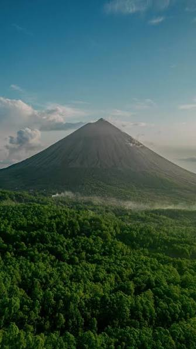
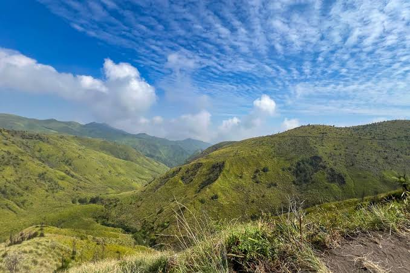

Tempat Wisata
Destinasi wisata terbaik yang wajib dikunjungi di Adonara
 Pantai
Pantai
Pantai Meko
Pantai pasir timbul yang terletak di antara tiga gunung api. Air lautnya jernih kebiruan dengan pasir putih yang eksotis. Terletak di Dusun Michael, Kecamatan Witihama.

GunungGunung Ile Boleng
Gunung berapi aktif setinggi 1.277 mdpl yang mendominasi pemandangan Pulau Adonara. Bisa didaki dengan pemandu lokal untuk menikmati panorama selat Flores.
 Pantai
Pantai
Pantai Watotena
Surga tersembunyi dengan hamparan pasir putih sepanjang 1 km dan gradasi air hijau tosca. Bisa snorkeling dan menikmati pemandangan Gunung Ile Boleng.
 Pantai
Pantai
Pantai Ina Burak
Pantai pasir putih tersembunyi di selatan Adonara. Dikelilingi tebing karang hitam dengan sunset yang spektakuler menghadap Selat Lamakera.
 Danau
Danau
Danau Kotakaya
Laguna alami di pesisir barat Adonara dengan air asin dan pohon bakau di sekitarnya. Suasana tenang yang cocok untuk bersantai menikmati alam.

BukitBukit Sabana Adonara
Padang sabana hijau di sekitar Gunung Ile Boleng. Pemandangan perbukitan yang membentang dengan latar belakang laut biru Flores yang menakjubkan.
 Air Terjun
Air Terjun
Air Terjun Batu Kapal
Air terjun yang terletak di kawasan pegunungan, dengan pemandangan alam yang indah dan udara yang sejuk. Tempat yang cocok untuk bersepeda dan menikmati keindahan alam.


.jpg)